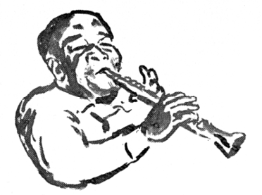
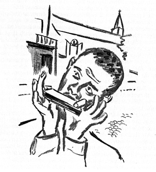

Çevirmenin Önsözü
1940’ların sonları, bütün dünyanın üzerine çöken Soğuk Savaş yılları. Bir yanda Sovyetler Birliği ve dünya komünist hareketi, bir yanda Amerika’nın başını çektiği karşı blok. İşte bu yıllarda, 2. Dünya Savaşı öncesinde, tek partili yönetimin savaş ortalarına kadar Nazi Almanyası’ndan kuvvetle etkilenen, azınlıklara ve Musevi yurttaşlarımıza ve sola karşı giderek amansızlaşan kanadı; ardından, Soğuk Savaş’ın dünyaya çöktüğü 1945-46’larda ülkemizde açılan yeni “demokrasi” döneminde komünizme karşı seferinde Amerika’nın önemli bir üssü haline gelen Türkiye. Bu dönemde, Amerikan Donanması İstanbul’u, İzmir’i ve daha başka limanlarımızı sık sık ziyaret eder oldu. İstanbul barları “caz” dedikleri müzikle sabahlara kadar Amerikan denizcilerini ağırlamaya başladı. Kırmızı Fener mahallelerimiz Amerikalı erlerle parlak bir dönem, eğlence sektörümüz büyük bir atılım yaşadı. Kıyı kentlerimiz barlarla donandı. Bu yıllarda sinemalarımızı kaplayan Hollywood filmleriyle birlikte Hollywood’un tin-pan-alley1 müziği, caz etiketi altında ülkemize girmeye koyuldu. Devlet adamlarımız “Türkiye, Küçük Amerika olacak!” diye şakımaya başladılar ve günün birinde şarkıcılarımızın “America I Love You” (Seni Seviyorum Amerika) diye meledikleri şarkıları dinlemeye başladık. Sonunda, halkımızın, Cumhuriyet tarihinde ilk kez başkalarının hesabına, Amerikan hegemonyası uğruna yabancı bir ülkede can veren gençlerimizin acısını, “Kore nire?” diye yaşadığı günleri de gördük. İşte bu yetişme yıllarımızda, bizim kuşaktan birçoğumuzun içinde caza karşı bir antipati oluştu. Bu antipati, artan siyasal ve toplumsal olaylar ve Türkiye’nin giderek semiren üst sınıflarının yoz kültür bombardımanıyla arttı.
1) Tin-pan-alley sözcüğü iki ayrı kaynakta şöyle açıklanıyor. –Ç.N.:
Tin Pan Alley: 19. yüzyıl sonlarında New York kentindeki şarkı yayımcılığı sanayisinden doğan Amerikan popüler müzik türü. Kentte bu sanayinin geliştiği sokaklar için takma ad. İngilizce tin pan: “gürültülü” ve alley: “yol” olarak kullanılmış, tin pan deyimiyle yayımcılara şarkılarını tanıtanların gürültülü piyano çalışları anlatılmıştır. Tin Pan Alley ticari amaçlarla yazılan baladları, dans ve vodvil müziklerini kapsıyordu. Zamanla genel bir anlam kazanarak Amerikan popüler müziğiyle eş tutulmaya başladı. İlk yaygınlaştığı sırada Tin Pan Alley’in en kârlı ticari ürünü, evlerde kullanılmak üzere basılan notalardı. Şarkıların müziğini ve sözlerini yazanlarla bunları seslendirenler talebi karşılayabilmek için çok hızlı çalışmak zorundaydı. Sinema, plak, radyo ve televizyonun gelişmesi ise daha farklı türlerde olan müziğe olan talebi artırdı ve müzik yayıncılığı çeşitli merkezlere yayıldıkça Tin Pan Alley ortadan kalktı. (AnaBritannica, C.21, s. 22, Anayayıncılık, İstanbul, 1993.)
Tin Pan Alley (İng.): Amerika’nın New York Kenti’nde 19. yüzyıl sonundan 1920’lere kadar 28. Sokak ve 6. Caddeyi, sonra 49. Sokak’taki Brill Building’i merkez alan popüler şarkı yazarlarının ve yayıncılarının bulunduğu, adını aranjörlerin ve yayıncıların bürolarındaki küçük (Tiny) sesli piyanodan aldığı sanılan bölge. (İrkin Aktüze, Müziği Anlamak – Ansiklopedik Müzik Sözlüğü-, Pan Yayıncılık, İstanbul, Kasım 2004.)
Paul Robeson’u o sıralarda tanıdım. Onun spiritüalleriyle siyahların Amerikan toplumu içindeki durumunu sezmeye ve meraklanıp incelemeye başladım. Ama caza yabancılığım hep devam etti. Amerika’da çıkan Masses and Mainstream dergisine abone olmuştum. O dergide zaman zaman yazılarını okuduğum Sidney Finkelstein müzik dünyasına daha bilinçli olarak bakmama yol göstericilik etti. Daha sonra elimden gelen çabayla kitaplarına erişmeye çalıştım. Kitaplarının hemen hemen çoğunu getirttim. Jazz - A People’s Music de bunların arasındaydı. Öncelikle Batı sanat müziğini ele alan kitaplarını çevirdim. Bu kitaba zaman zaman göz atıyordum, ama asıl ilgimi çeken öbür kitapları üzerinde yoğunlaştım.
Compton’s Genel Müzik Ansiklopedisi’nde çalışırken “Caz” maddesinin başlangıç satırları dikkatimi çekti: “20. yüzyılın başından beri caz sözcüğü, Amerikan popüler müziği ile dans müziğinin çoğu türlerini içine alacak bir anlamda kullanılıyordu. Ama 1920’lerden sonra daha çok bir Afrikalı-Amerikalı müzik geleneğini, ABD’nin güney eyaletlerinde bir halk müziği olarak ortaya çıkan ve gittikçe daha ayrıntılı bir modern sanata dönüşen bir geleneği tanımlar duruma geldi. Klasik müzikten rock müziğine kadar daha başka birçok müzik türünde caza özgü öğeler kullanılmışsa da, bunlar caz geleneğinin dışında kalan müziklerdir.”
Cazın, siyahların, Amerikan toplumu içinde beyazların ırkçılığına, Ku-Klux-Klan’a, ırk ayrımcılığına karşı verdikleri uzun ve acı mücadeleleri içinde yarattıkları bir müzik olduğunu, Amerika’nın yerli halklarının, Afrikalı-Amerikalıların ve dünyanın hemen her köşesinden göçüp gelerek Amerika’ya yerleşen insanların, ezenlere karşı ortak bir mücadele ve ortak bir kültüre doğru gelişme ve bütünleşme içinde yarattığı özgün ve önemli bir müzik olduğunu kavrayabildim.
Sonunda Finkelstein’in bu kitabı Amerika’nın modern bir Roma İmparatorluğu olma hırsı ile dünyaya yüklenişinin bazı yanlarını aydınlatan ve aslında cazın bir eğlence müziği olmayıp büyük bir sanat olduğunu; her müzik ve her sanat gibi, cazın da plak şirketleri, kumpanyalar, mali menfaatlerce tin-pan-alley müziği gibi birçok yozlaşımına rağmen, gerçek caz sanatçılarının niteliklerini daima yüksekte tuttuklarını bana anlatan bu kitabı çevirmeye karar verdim.
Caz, bugün eğrisi ve doğrusuyla uluslararası bir sanat ve insanlığın kültür hazinesinin demirbaşlarından biri. Cazı daha yakından anlayabilmek için, kitabın adından da anlaşılacağı üzere cazın yaratıcısı olan Amerika’nın siyah insanlarının tarihini de, beyaz halkının tarihi kadar incelemek ve bir bileşim halinde kavramak gerekiyor.
ABD, iki buçuk yüzyıldan bu yana, hemen hemen her ırktan, her din ve her milliyetten, zengin olmak isteyen, ülkesinin yasalarından kaçan, macera arayan, daha iyi bir yaşama kavuşmak isteyen insanların oluşturduğu bir ülke. Kızılderililer ve Eskimolar binlerce yıldır buradaydı. Öteki gruplar zenginlik, serüven ve yeni bir yaşam bulmak umuduyla çok daha sonra buraya geldiler. Savaş, açlık ve dinsel ya da siyasal inançları yüzünden zulüm görmekten kaçan bazıları da yalnızca güven içinde yaşama ve hayatta kalma umuduyla buraya gelmişti. ABD’ye bir tek siyahlar kendi istek ve iradelerinin dışında, anayurtlarından zorla koparılarak, zincire vurularak getirildiler ve köle olarak yaşamaya mecbur edildiler. Amerika’da ve dünya da sermayenin ve kapitalizmin temel kaynaklarından birini oluşturdular.
Bu kitabı, cazın gerektiği gibi anlaşılıp tartışılmasına katkıda bulunacağı ve bir yandan da Amerika’da siyahların korkunç serüveninin araştırılmasına yol açacağı düşüncesiyle çeviriyorum. Bilim, sanat ve kültür konularında olduğu gibi, caz konusunda da gerçek bilgi sunan ve bilimsel olarak yazılmış kitaplar dilimize çevrilmelidir. Şimdiye kadar çok değerli katkılar yapılmış olsa da genel müzik kitaplığımız bu alanda fakirdir. Batı müziğiyle 200 yıla yakın bir süredir ilgilenmeye çalıştığımız halde, birkaç değerli müzik adamımızın çabaları dışında bilgi ve sözlük alanında gereken yapılmamıştır. Türk müziği ve Türk halk müziği alanında da aynı durgunluk göze çarpıyor.
Türkçemizde caz sözlükçesi konusundaki çalışmalar yok denecek kadar azdır. Cazla ilgilenenler caz terimlerini, hemen her konuda en başta yapıldığı üzere yabancı terimleriyle olduğu gibi kullandılar ve kullanıyorlar. Bu özellikle caz gibi öbürlerine göre yeni olan bir müzik için çok doğaldır. Son zamanlarda Türkçe’ye çevrilen çok değerli caz kitaplarında bazı sözlükçeler yer almakla birlikte, genel müzik terimleri konusunda olduğu kadar, cazın başka dile çevrilmesi olanaksız, bir halkın yaşamından ve kendi anlatımından kaynaklanan ve ilerleyen zamanın katkılarıyla zenginleşen özel terimleri, bu konu da, caz üzerinde çalışan ehil kişilerin çalışmalarını bekliyor. Bu çeviride, metin içinde geçen ve açıklanması gerekli görülen terimler elden geldiğince çevrilmeye çalışıldı. Genel olarak müzik terimleri konusunda var olan dağınıklığın giderilmesini, akademik çevrelerin verimli katkılarının gündeme girmesini temenni ediyorum.
Jazz- A People’s Music’in ilk basımı 1948’de yayınlanmış; benim elime geçen The Jazz Book Club’ın The Citadel Press, New York düzenlemesiyle Londra 1964 basımıydı. Bu konuda başta Yıldırım Dağyeli ve Birten Lostar’a ve bana yardımlarını esirgemeyen arkadaşlarıma; ricamı kırmayarak çevirimi okuyan, öneri ve uyarılarından çok yararlandığım değerli arkadaşım Ülkü Sağır’a; kitabın en son 1988 baskısını bana ulaştıran, hekimliğini Amerika’da sürdüren İstanbul Tıp Fakültesi’nden sınıf arkadaşım ve İstanbul Yüksek Tahsil Gençlik Derneği’nden omuzdaşım değerli Dr. Saim Akın’a sonsuz teşekkürler.
Caz-Bir Halkın Müziği’nin kitaplığımıza bir katkı olarak yerini alması, özellikle de Yeni Dünya’nın yaratıcı siyah insanlarının müzik, sanat ve kültür dünyasına katkılarına biraz olsun dikkati çekmesi umut ve dileğiyle.
M. Halim Spatar

Geoffrey Jacques’ın Önsözü2
2 Bu önsöz, International Publisher’s, 1988 basımından alınmıştır.
Elinizde tuttuğunuz kitap, bugüne kadar caz üzerine yazılan en önemli yapıtlardan biridir. Bu büyük müziğin genel değerlendirmelerine, yüzyıl önce ragtime olarak başladığı günlerden bu yana musallat olagelmiş gettoculuğa ve ırkçı ayrımcılığa karşı gerçek bir manifestodur. Bu müziği dört bir yanından kuşatagelmiş yalanları ve yanlış anlamaları, cazın zamanımızın önde gelen yaratıcı sanat güçlerinden biri olduğunu -her on yılda bir tekrarlanırmış gibi görünen- inkâr çabalarını gözler önüne sermektedir.
Caz - Bir Halkın Müziği, Manhattan’ın 52. Caddesi’nin, 2. Dünya Savaşı sonrasının en coşkulu deneysel gelişmelerinden bazılarının evrensel başkenti olduğu günlerde yazıldı. Müzisyenlerin ve hayranlarının kullandıkları adıyla “Cadde”, Beşinci ve Altıncı Bulvarlar arasındaki şeritti; buradaki gece kulüplerinde her gece 20. yüzyıl Birleşik Devletler (BD) müziğinin en büyük adları dinleyici karşısına çıkıyordu. Edward “Duke” Ellington, William “Count” Basie, Art Tatum, Coleman Hawkins ve onların yanı sıra, aralarında Charlie Parker ve John “Dizzy” Gillespie’nin de bulunduğu, henüz 20’li yaşlarını sürmekte olan genç müzisyenler, o blok üzerinde yer alan kahverengi taştan yapılmış evlerin bodrumlarına oyulmuş küçücük odalarda band’larını yönetiyorlardı. 1940’ların halk arasında bebop olarak bilinen cazı, burada hem canlı icralarla, hem de Royal Roost gibi kulüplerdeki bu seslendirmeleri Mutual Radyo yayın şebekesinin radyodan yayınlamasıyla geniş dinleyici kitlesine ulaştı.
İlk basımı 1948’de yapılan Caz - Bir Halkın Müziği, zamanının heyecan verici müzik ve toplum olaylarını yansıtan bir kitap. İletisi birçok bakımdan bugün de, 40 yıl önce olduğu kadar gözü pek…
1948’de bu ileti, yani caz adını verdiğimiz müziğin, dünya büyük müzik yaratım birikiminin ayrılmaz bir parçasını oluşturduğu; karmaşıklığı, yaratıcılığı, dinamik erimi ve duygu derinliği bakımından her parçasıyla geçmişin büyük ve tanınmış müziği kadar önem taşıdığı, gerçekten cesur bir iletiydi. Cazın “sözüm ona aşağı ırktan” bir halk tarafından yaratıldığı için toplumsal bakımdan aşağı nitelikte bir müzik olduğu, o günlerde klişeleşmiş bir iddiaydı. Cazın bir dans müziği olduğu kadar, bir konser müziği olduğu; şarkı ve doğaçlama olduğu kadar kompozisyon olduğu anlayışının kendisi de birçoklarınca tafra satıcılığının dik âlâsı sayılıyordu.
1940’larda hem Ellington’un, hem Gillespie’nin orkestralarını Carnegie Hall’a taşımaları gürültü ve kargaşaya yol açmıştı; şafak vaktinden birkaç saat öncesine kadar kapıları açılmayan, kekre alkol kokusu sinmiş havasız odaların, bu “hot” (“kızgın”) müziğe has biricik yerler olduğuna inanan pek çok “caz dostu” vardı. Bu müziğin “ruh”unun, ancak gece yaratıklarının fink attıkları yerde başarılı olacağını, ancak burada gelişeceğini düşünüyorlardı.
Bu efsanenin kendisi, müziğin kaynakları ve anlamları konusundaki popüler anlayışla öylesine içli dışlıydı ki, kamu siyasetinin içine bile işlemişti. New York City Emniyet Müdürlüğü yıllarca caz müzisyenlerinin parmak izlerini aldı ve özel bir “kabare belgesi”, bir tür yarı-apartheid geçiş kartı3 çıkardı; kartı olmayan hiçbir müzisyen alkollü içki satılan yerlerde çalışamıyordu. Yasanın ihlali o müzikçinin kartının iptaline neden olabiliyordu. Bu yüzden birçok önemli müzikçiye, seçilmiş mesleklerini kendilerine açık olan tek bulvarda icra etme hakkı tanınmadı. Şarkıcı Billie Holiday bunun iyi bilinen örneklerinden biriydi. Piyanist ve besteci Thelonius Monk, 1950’lerin başlarında bu New York tarzı “geçiş” yasası nedeniyle yıllarca tanınmamış biri olarak kalmıştı.
3) Yarı-apartheid: (AnaBritannica’nın ilgili maddesinden özetliyoruz; –Ç.N.): Afrikaner dilinde (bir zamanlar Güney Afrika Cumhuriyeti’ne egemen olan beyaz azınlığın dili), beyaz azınlık ile beyaz olmayan çoğunluk arasındaki ilişkilere yön vermiş olan ırk ayrımı politikası. 1990’larda başlamış bir uygulamaydı. ... Yasalarca uygun görülen ve Güney Afrika’da yaygın olarak uygulanan ırk ayrımı siyaseti, Ulusal Parti’nin iktidara gelmesiyle daha da geliştirildi ve apartheid adını aldı. Hükümet, beyaz olmayanların sınırlanmış bölgelerde bulunmalarına izin verildiğini gösterir bir belge taşımalarını zorunlu kılan mevcut pasaport yasalarını daha da sertleştirdi.
Bu kitap, bu denli amansız bir kamu siyasetini yaratan tutuma karşı yazılmıştır. Seçkin Marksist eleştirmen ve yazar Sidney Finkelstein, Caz - Bir Halkın Müziği’ni yazarken, o günlerin deneyler yapaduran ve lafını en esirgemez türden olan caz müzikçileriyle aynı dünya görüşünü paylaşmaktaydı.
Caz - Bir Halkın Müziği, pek çok bakımdan çok güncel olan bir kitap. Finkelstein bu kitabında, o sıralarda müzikte ve genel basında caz konusunda çok daha yaygın bir durumda olan anlayışların çoğuna karşıt düşen bir caz yorumunu kaleme alıyordu. Savaş sonrası döneminin yeni cazı -bebop adı verilen müzik- bir bakıma müzik dünyasında kendi yerini almak için savaş vermekteydi. Parker, Gillespie, Monk ve başkaları, zorlu ekmek mücadelelerinin yanı sıra, bir de bu müziğin meşruluğu uğrunda mücadele vermekteydiler. Bu, dinleyicilerle müzisyenler arasındaki bir mücadeleden çok gazeteciler ve belki de en önemlisi plak kumpanyaları arasındaki mücadeleydi. Durum öylesine kötüydü ki, bu müziği bodrum katlarında yapılan kayıtlardan başlayarak gramofon plaklarıyla “yayına” açan birkaç girişimci caz meraklısının heyecanı olmasa, modern caz müzisyenlerinin öncü kuşağı tarafından yaratılan cazın büyük bölümü belgelenememiş olacaktı. Finkelstein, 1940’lı yıllar cazının, halk kültürünün artan entipüftenleştirilme ve metalaştırılmasının karşısına dikilmiş ticaret karşıtı bir tür işaret feneri olduğunu yazarken, şaka yapmaktan uzaktı.
Modern caz, daha başka birtakım saldırıların da hedefiydi. Pek çok kişi bebop’u caz tarihinden ayırmak için elinden geleni yaptı. Bu çabalar, genç müzisyenler kuşağı ile basının “küflenmiş mantarlar” diye söz ettiği yaşlı müzisyenler arasında kurmaca bir “kan davası” biçimini aldı. Gillespie’yi dinleyen Louis Armstrong, onun müziği için “Çin müziği” gibisinden, yeni müziği küçük düşüren sözler sarf etmiş; bu da, “katıksız” cazı savunanların, New Orleans müziğinin “Dixieland” cazı olarak bilinen kemikleşmiş, müzelik duruma gelmiş biçiminden yana büyük bir propaganda kampanyası açmalarına fırsat vermişti. Müzisyenler emekliye çekildikleri köşelerden alınarak, “kaybolup gitmiş gerçek” caz sanatındaki büyük keşifler olarak reklam edildiler ve sözüm ona “katıksız” caz yanlılarının, günün yeni ve dipdiri caz müziğine saldırabilmeleri için putlaştırıldılar.
Yeni müziği anlamayanlar (ve ondan korkmuş olabilecek kimileri), önceki cazla hiçbir ilgisi bulunmadığını öne sürerek bu müziğe saldırdılar; bu yeni “sound” öylesine tazeydi ki, biri savaş öncesi, öbürü de “modern” olmak üzere iki caz tipi varmış gibi görünüyordu.
Yalnızca modern cazı değil, tümüyle müziği ilgilendiren her türden efsane öne sürüldü. Caz Afrikalıydı, Afrikalı değildi; aklıyla değil, ezbere çalan, okul medrese görmemiş, okuma yazma bilmeyen müzisyenlerin müziğiydi. Gecenin, alkollü içkinin ve cinselliğin müziğiydi. Aslında ciddi yaratıcı bir anlatım olmaktan uzaktı, bir şarkı ve dans, bir kompozisyon ve doğaçlama müziğiydi. Bu yüzyılın başlarında kendisini modern, çokuluslu, çok ırklı bir BD kültürü yaratmakta halkın geri kalanına katılır durumda bulan Afrika kökenli Amerikalı halk tarafından icat edilen ve esinlendirilen bir müziksel anlatım olmaktan da uzaktı.
Oysa, çevrelerini kuşatmış olan tüm belalara karşın, müzisyenlerin kendileri, kim olduklarını, ne yaptıklarını kesinlikle biliyorlardı. Biliyorlardı ama, giriştikleri kavga, kolay bir kavga değildi. Ellington, sabık “destekçiler”i tarafından hâlâ suçlanan süitler ve uzun besteler yazıyordu. Gillespie ile Parker’ın, New York ve Hollywood’daki gece kulüplerinde karma ırktan modern caz beşlisi ile izleyici karşısına ilk çıkışlarında, müziği, her şarkının ne olduğunu bildirmeden, şarkılar arasında fıkralar anlatmadan baştan aşağı sanki konser parçaları gibiymişçesine çalışları, oraya sirk seyrine ya da bir “stand-up” komedyenini dinlemeye giden birinin beklediği tarzda “eğlenmeye” gelmiş olan dinleyicilere aşağılama gibi gelmişti. Tabii, aynı müzisyenler bunun yanı sıra New York’taki Apollo ya da Detroit’teki Paradise gibi tiyatrolarda konser benzeri durumlarda da çalıyorlardı. Ama oradaki dinleyiciler başkaydı: Başka milliyetlerden insanların yanı sıra, büyük ölçüde Afrika kökenli Amerikalılardı; bu dinleyiciler müziğe, hasbelkader gece kulübü sahibi olmuş kişilerden çok daha saygılıydılar.
Caz müzisyenleri, 1940’lı yılların sonlarında açmakta oldukları armoni ve ritim çığırının, güzel sanatlar ve teknolojide, felsefede, sosyal bilim ve politikadaki devrimci gelişmelerin öncü kolu olduğunu biliyorlardı. 1940’ların modern cazı, Afrika kökenli Amerikan halkının müziksel ürününü dünyada kültür alanında olan gelişmelerin tamamlayıcı bir öğesi olarak ilk kez tanımlamaya çaba gösteren bir müzikti.
Bunların hepsi, Marksist-Leninist bir bakış açısından konuyu inceleyerek, inisiyatifi ele alıp, cesur çözümlemeler ve açılımlar yapan Finkelstein tarafından kitaba yansıtılmaktadır.
Cazın bir dünya müziği olarak kabullenilmesi uzun süre savsaklanmıştır. Caz - Bir Halkın Müziği’nin değeri, onun cazı, bir yandan bir dünya müziği olarak kabul edişinde, bir yandan da yapısı ve içeriği bakımından derin bir devrim geçirmekte olan bir müzik olarak ele alışındadır.
“40’lı” yılların caz “devrimi”, çağdaş kültürün anlaşılması en zor olan bilmecelerinden biridir. Bu devrim, geride kalan her yılla birlikte, birçok bakımdan gerçek devrime gitgide daha az benzeyen bir sound vermekte. Charlie Parker’ın çaldığı bir blues’la, onun Johnny Hodges ya da Willie Smith gibi deneyimli ve güvenilir icracılarının çaldıkları bir blues arasındaki bağ her zamankinden daha belirgin bir biçimde göze çarpıyor. Gerçekten, 1930’lar ve 1940’ların başlangıç yıllarının müziği -yani, bebop öncesi caz müziği- ile, bu parçaları izleyen modern cazın sonraki tohumlarını içeren bazı besteler dinlendiğinde, bütün bu kuru gürültünün hangi konuda koparıldığı hayret uyandırır.
Ama gene de, Show Nuff, Dizzy Atmospher, Things to Come ya da Dexter Gordon’la Wardell Gray’in The Chase’i gibi plaklar dinlendiğinde, derin devrimci coşkuya kapılmaktan insan kendini alıkoyamaz. Finkelstein, bebop’un caz mirasına sıkı sıkıya bağlı olduğunu olanca ayrıntılarıyla göz önüne serer. Onun gerçekten ne denli “yeni” bir müzik olduğunu gösterir. 1940’lardaki Amerikan müziğini seslendirmekte olan genç icracılar kuşağının karşılaştığı sorunları ele alan eleştirel araştırması, o dönemin onca kitabına ve dergisine egemen olan Hollywood reklamcılık üslubundan insanın içini rahatlatan bir kurtuluş sağlıyor.
Alçakgönüllülük gösterirmiş gibi yaparak cazı küçümseyen, caza tepeden bakan bir tutum bu önemli müziği ciddiye almayı pek çok insan için zorlaştırmıştır. Finkelstein’in böyle bir tutumdan ne denli uzak olduğunu görmek için, bu kitabı, Leonard Feather’ın, bebop “kültçülüğü”nün çeşitli yanlarını bir Hollywood “fanzin”inin hırsıyla özdeşleştiren Inside Bebop’u (Robbins, NY, 1949) gibi yapıtlarla karşılaştırmak yeter.
Finkelstein, caz müzisyenlerinin, kendi sanatlarının çağımızın önemli sanat formlarından biri olduğu olgusunu bilinçli olarak kullanmaya girişirlerken karşılarına çıkan görevler konusunda birçok önemli sorunu ortaya koyuyor. Gerçekten de bebop, biçilip bir yana bırakılmış görünen bir müzikti: Önceki cazın tümünü aşan bir nitelik taşıyordu; ama aynı zamanda da yalnızca kendi sınırlarını değil, cazın başından sonuna işleyedurduğu yapısında var olan sorunları da gözler önüne seriyordu. Bir şarkı ve dans müziği olan bebop, caz yaratımının ana yapısını oluşturan şarkı formunun geleceği sorununu gerektiği gibi ele alamamış, buna bir yanıt bulamamış gibi görünüyordu; bu da, son 40 yıldır müzisyenlerin göğüs göğüse boğuştukları temel bir sorun olagelmiştir.
Bu durum, kitabın yazılmasından bu yana cazın gelişimindeki göze çarpan yanları, yani “free” caz olarak bilinen genişletilmiş form, modalite denemelerini ve caz terimini, Afro-Amerikan kaynakları serbestçe kullanan çağdaş Amerikan doğaçlama müziğini layıkıyla tanımlayan bir etiket olarak tartışmalı bir biçimde kullanmış olan müzikal yaratıcılığın başka yaklaşımlarını, kısmen açıklamaktadır.
Buna karşılık, son 40 yılda doğaçlamaya dayanan müziğin çeşitli yönelimlerine karşın “caz” terimi yazınsal amaçlar için hâlâ en kullanışlı olan terimdir. Her şeyden önce bir geleneği ve onu başka müzik türlerinden ayırt eden müziğe bakış biçimini tanımlar. Üstelik, her geçen yılla birlikte, “caz” sözcüğünü, püristlerin, reklamcıların, fırsatçıların ve Henry Threadgill’in deyişiyle, “mezarlık virtüözlerinin döküntüleriyle” dolu bir “caz” nostaljisini yeniden yaratmak isteyenlerin elinden almak gitgide zorunlu hale gelmektedir.
Saksofoncu ve besteci Threadgill, günümüzün önde gelen doğaçlamacılarından ve caz topluluğu şeflerinden biridir ve bir sanatçı olarak Finkelstein’in bu kitabın sonunda üzerinde durduğu form, kompozisyon ve doğaçlamayla ilgili sorunların birçoğu ile o da yüz yüze gelir. Ama caz geleneğine sadık olan Threadgill, bu sorunlara kendi tarzında ve Finkelstein’in önerdiğinden tümüyle farklı biçimlerde yanıt verir. Threadgill, günümüzün en serüven düşkünü, yaratıcı müziğinin, gene en derin armonik, ritmik ve doğaçlamasal olasılıklarını keşfededurur, öte yandan 1920’li yılların ortalarının New Orleans müziğinin neşeli canlılığını hatırlatan bir müzikte geleneksel ve modern caz stillerinin geniş bir çeşitlemesini bir araya getirir. Onun 1983 - Just the Facts ve Pass the Bucket (About Time AT 1005) ve 1987 - You Know the Number (RCA-Novus 3013-I-N) gibi plakları çağdaş cazın keşfedilmesi yönünde en iyi başlangıç noktasını oluşturur.
Caz, kendine özgü bir dili, kendi geleneği olan bir sanattır. Geçen yarım yüzyıl sırasında dünya kültürünün geniş bir alanının dilini içine almış ve değiştirmiştir; bu gelenek içinde çalışan müzisyenler yalnızca Avrupa değil, Asya ve Afrika müziğini de benimsemişlerdir.
Kitabın son bölümünde değinildiği üzere, Amerikalı müzisyenler birçok etkiyi özümleyerek kendi yollarını bulmak zorunda kalmışlardı. Ve John Cage gibi bir besteci, Bali ve daha başka Asya vurmalı çalgılar müziğini ehlileştirmeye çalışırken, davulcu Art Blakey, Kübalı davulcularla dolu bir odada bir tap-drum davul seti kurmuş ve doğaçlamaya girişmişti. Blakey için sonuç, Afrika ve Küba etkilerinin derinlemesine algılanabildiği, özel olarak Afrika kökenli Amerikan caz geleneği stilinde, buna karşılık Afrikalı olmaktan tümüyle uzak olan bir caz davul stilinin gelişmesi oldu.
Threadgill ve bazı çalışma arkadaşları için aynısı söylenebilir. 1980’li yılların başlarında Anthony Davis, Malcolm X’in yaşamını konu alan bir opera yazdığında, müziği seslendiren orkestranın çekirdeği olarak kendi küçük topluluğunu kullandı. Anthony Davis’in tüm müzikleri gibi, “X”e yöneltilen eleştirel tepkiler de karışık oldu; böyle olmakla birlikte, eserin kendisi caz geleneği içinde çalışan müzisyenin kullanabileceği engin dile yeni bir form bulma girişimi olarak görüldü.
Bir yanda caz icrasında kullanılan ritmik, armonik ve melodik dil, öte yanda müzisyenlerin o dili ifade etmeleri arasındaki bu gerilim, bu daimi dinamik, caz müziğinin başlıca itici gücünü oluşturur. Birleşik Devletler’deki popüler müziğin temel öğelerinden biri olan caz, daima kendini blues ve şarkı formuna bağlamayı gerekli görür; ama gene de her keresinde bu formları gerip sınırlarına kadar uzatır. Daha genç kuşağın önemli tenor saksofoncusu David Murray’nin yıllardır caz müzisyenleri tarafından seslendirilen kompozisyonların birçoğunu çalarak, geleneksel caz dörtlüsü ya da sekizlisi bağlamı içinde “serbest” doğaçlamayı politonalite (çoktonluluk) ile kolayca karmaştırabilmesi, eserdeki bu gerimin büyük örneklerinden biridir. Murray, a cappella (yani bir ritim bölütü olmadan) icra ettiği World Saxophone Quartet’le birlikte çaldığı zaman, şarkı ve blues formları, çağımızın herhangi bir müzikçisinin cesaret edebileceği kadar gerilip uzatılır.
Cazdaki maceracı, deneyci geleneğini sürdüren bu yorumcuları dinlemek çok şey öğretir. Art Ensemble of Chicago gibi topluluklar, müzikte hem ton, hem ritim açısından dilin tümüyle gereksiz göründüğü kimi anlarda, Ornette Coleman, John Coltrane, Alber Ayler ve Cecil Taylor gibi müzisyenlerin getirdikleri yenilikleri kullanır; ama müzik topluluklarının bu en avant’garde’ı bile blues’lara ve popüler şarkılara sürekli göndermeler yaparak kendini başkalarından ayırt eder.
Caz - Bir Halkın Müziği’nin yazılmasından bu yana müzisyenlerin yaptıkları şey, Finkelstein’in bir sınırlanma olarak gördüğü sorunu bir kazanıma çevirmektir; dille biçim arasındaki çatışmanın caza sınırlama getirdiği gerçektir; ama bu çatışmanın cazı, çağdaş dünyanın en taze, en dinamik müziksel itisi kılmayı sürdüren bir kuvvet olduğu da onun kadar gerçektir.
Bu, en en iyi trompetçi ve besteci Miles Davis’in sanatında ve çalışmasında kendini gösterir. Mesleğine, Julliard Okulu’nu bırakıp, müziği Charlie Parker’ın himayesi altında öğrenerek başlayan Davis, öğretmeninin ardından savaş sonrası çağın en etkili müzikçisi olmuştur. Davis’in sanat yaşamı, son 40 yılın önemli caz okullarının tümünü kapsar ve onun sanat yaşamının incelenmesi, modern BD müziğinin tüm erimi içindeki bilgi ve zevk zenginliğini ortaya koyar. Davis, savaş sonrası çağın önemli müzisyenlerinden çoğu ile birlikte çalmıştır ve bu topluluklardan ikisi -John Coltrane’in içinde yer aldığı 1955-57 beşlisi ile, Wayne Shorter ve Herbie Hancock’un içinde yer aldığı 1965-69 beşlisi- birçokları tarafından o yılların caz müziğinin en iyi yaratıcı ve yorumcuları arasında kabul edilir.
Böyle olmakla birlikte, Davis’in sanat yaşamı daha esaslı bir nedenden ötürü önem taşır: Davis, cazın ilerlemiş armonik, ritmik ve melodik dili ile o dili iletecek popüler müziğe yakın bir form bulma zorunluluğu arasındaki gerilim, diyalektik etkileşim ve çelişkiyle durmadan boğuşmuştur.
Bu nedenle, Davis’in çalışması hep tartışmalı olmuştur. Geçen 20 yıl boyunca çağdaş rock-and-roll ve rhythm-and-blues müzik formlarında kullanılan ritmik yapıyı yeğleyerek, geleneksel, 4/4’lük vurulu caz ritmini bırakmıştır. Dinleyicileri içindeki “püristler”i üzmek pahasına, melez bir üslupta dublajı yapılmış bir “füzyon”un halk arasında yayılmasına önayak oldu. Oysa Davis, asla “füzyonist” değildi. Başkaları kendilerini çağdaş popüler müziğin basitliğinin götürdüğü ritim ve armoni hapsine düşmeye koyvermişken, Davis, bu formu, kimi zaman onların bu oldukça sıkıcı düzenini görmezlikten gelir görünen geniş bir doğaçlamalar dizisi için bir arka plan olarak kullanmıştır. Buna karşılık Davis, en son çıkardığı plaklarda, onun yanı sıra konserlerinde, bu sınırlılıkların daha da ötesine geçmiş, gerek güncel ritmik kalıpları ve gerekse en son elektronik müzik çalgılar kuşağını daha bütünselci (holistic)4 müziksel bir yaklaşımla kaynaştırmış görünüyor.
4) “Bölütlerle bütünler arasındaki örgensel ya da işlevsel bağı vurgulayan”- Bkz. Orhan Hançerlioğlu, “Holism”: Bütünsellik felsefesi, Felsefe Ansiklopedisi, Cilt 2. (E~I, s.334, Remzi Kitabevi, 1977), –Ç.N.
Çağdaş müziğin ritmik öğelerini kullanmaktaki ısrarı, Davis’in Afro-Amerikalı müzik yaratısının kendine ait versiyonunu gerçek bir popüler sanat olarak sürdürme isteğini de yansıtır. Birçok eleştirmen Davis’in 1987’de çıkardığı Tutu’yu (Warner-Bros. 9 25490- 1) “tekno-pop” tarzında bayağı bir alıştırma olarak kötülemişti. Oysa insanın bu allamelere, haydi, yaratıcı, -caz geleneğinin ayar damgası olan- sürpriz “sound”la dolu bir “tekno-pop” daha bulun da görelim, diyesi geliyor! Bu kitabı okuyanların, çağdaş cazda önemli olan bir sanatçının, bu kitapta öne sürülen sorunlara nasıl çözümler bulduğu konusunda fikir sahibi olmaları için, Miles Davis’in tüm kaydedilmiş yapıtlarını dinlemeleri yararlı olacaktır.
Bir Önsöz’de, Finkelstein’in kitabının yazılmasından bu yana geçmiş modern caz tarihini ayrıntılı bir biçimde sayıp dökmek, neyin nerede bulunacağını anlatmak insana çekici geliyor. Ama bunun için başka bir kitap yazmak gerekir. Gene de, birkaç öneride bulunmak yararlı olur. Birleşik Devletler’de aşağı yukarı son on yıllık süre içinde sonuçları karışık olmuş da olsa, cazın bir tür yeniden canlanışı gerçekleşmiştir. Yanlış yönlendirici olabilecek bir tutum, 1940’lar ve 1950’lerin cazına eleştirel olacak yerde, daha çok nostalji yaratıcı ve hoşa gidecek bir tarzda ağırlık vermektir. O dönemin müziği zengin, çok katmanlı ve tahrik edici bir yapıt birikimiydi; şimdi, “hard boppers” (“katı bop’çular”) diye tanınan davulcu Art Blakey’nin, piyanist Horace Silver’ın ya da saksofoncu John Coltrane’le Theodore “Sonny” Rollins’in parlak çalışmalarına gösterilen ilgi, kontrbasçı-besteci Charlie Mingus’un deneysel, heyecan verici çalışmasını asla karanlıkta bırakmamalıdır. Thelonius Monk’un çalışmalarını dikkatle incelemeye vakit ayıran dinleyiciyi de çok önemli bir ödül bekler. 1958’de Manhattan’daki Five Spot Cafe’de saksofoncu Johnny Griffin’le birlikte yapılan iki albümlük kayıt (Riverside RLP 262 ve RLP 279), Monk’a modern cazın “Başrahibi” lakabını kazandıran tüm parlaklığı ve icat yeteneğini gözler önüne serer.
Böyle olmakla birlikte, Chicago, Detroit, Los Angeles ve San Francisco gibi merkezlerde yaşayan müzisyenlerin katkıları göz önüne alınmadan, 1950’lerin caz müziğinin hiçbir öyküsü tamam olmaz.
Finkelstein, caz tarihinin Afrika kökenli Amerikalı halkın ırk ayrımcılığına karşı mücadelesi, demokrasi ve tam eşitlik mücadelesi ile sıkı sıkıya bağlı olduğunu vurguluyor. Finkelstein, kitabını yazdığı 1940’lı yıllarda, Afrika kökenli Amerikalı halktan bir “ulus” diye söz ederek o sıralar sol kesimde yaygın olan bir düşünceyi yansıtmakta. Bu, ilk olarak 1928’de, Komünist Parti’nin siyah Amerikalılar için öne sürdüğü kendi milli kaderini kendinin belirlemesi sloganıyla ilgilidir. 1950’lerin sonlarına kadar bu, baskın komünist görüş olarak kaldıysa da, Finkelstein’in kitabını yazdığı sırada Marksist yazındaki vurgulamalarda olası bir seçenek olarak ayrı bir “ulus” düşüncesinden uzaklaşma başlamaktaydı. Bir yandan komünistlerin siyah halkın yaşamına ve mücadelelerine büyük ölçüde derinlemesine katılmaları, bir yandan da Afro-Amerikan toplumunun siyaset ve kültür alanındaki mücadelelerinin başlıca eğilimlerini yakından izlemelerinin sonucu, siyasetlerinin ağırlık merkezi gitgide çok ırklı Amerikan ulusunun bir parçası olarak demokrasi ve eşitlik uğrundaki mücadelenin sorunları üzerinde yoğunlaştı.
Bu nedenle, caz tarihini incelerken Finkelstein’in cazın tarihi ile, Afrika kökenli Amerikalıların karşı karşıya bulundukları ırk ayrımı, baskı ve sömürü arasındaki karşılıklı ilişkiye işaret etmesi son derece doğaldır. Ama caz, yalnızca bir protest müzik değildir. Cazın dokusu içinde elbette protesto vardır. Ama, cazın gelişmesi ile demokrasi mücadelesi arasındaki bağ, protestoyu aşan bir şeydir.
Caz, dünya çapında kabul edilen yüksek bir sanat formu olduğu halde, kültürümüze bu terimin ardı sıra giren tüm ticarileştirilmiş, metalaştırılmış rütbe ve süsleriyle, gene de ikinci sınıf yurttaş olarak, bir “eğlence” olarak muamele görür. Cazın konser müziği olarak statüsü şimdi, 40 yıl öncekinden çok daha kapsam kazanmışsa da, dumanlı, kokulu caz kulübü hâlâ bu müziğin dinleneceği “asıl” mekân sayılmakta. Cazın sözüm ona “dostları”, caz müzisyeninin sanatçı olmak yerine, bir tür gizemli “gece yaratığı” olmasında ayak diriyorlar.
Caz müziğine karşı yapılan en yoğun ayrımcılıklardan bazıları, istemeye istemeye yapılan övgüler tarzındadır. Ülkenin başta gelen müzik icra merkezlerinden biri olan New York’un Lincoln Center’ında cazın gördüğü muamele buna bir örnek oluşturur. 1988 yazında orada, çok reklam edilmiş “klasik caz” konseri dizileri gerçekleştirildi. Edward “Duke” Ellington’la 1940’ların önemli besteci ve orkestra düzenleyicisi Tadd Dameron’un müziğinin, ikisinin arasına sıkıştırılmış perküsyoncu Max Roach’un çalışını öne çıkaran bir konser gösterisiyle gerçekleştirilen bu kutlama töreni, Center’ın mutat “ölü sezonu” sırasında -yaz mevsiminin sonu ile “mutat” dokuz aylık sezonun başlangıcı arasındaki- sıcak ağustos günlerindeki bir haftanın içine sıkıştırılmıştı.
Bu sunuşla, Haziran’da gene Center’da yer alan büyük New York Caz Festivali’nin bir bölümünü oluşturan birkaç konsere bakıp, konser salonunun kapılarıyla konser koşullarının sonunda caz icracısına açık bir duruma geldiği düşünülebilir. Oysa Lincoln Center’daki caz müzikçisi, yer için kira ödeyen geçiçi bir “konuk”tur. Örneğin, Lincoln Center’ın Chamber Music Society’si (Oda Müziği Derneği) ile karşılaştırılırsa, caz müzikçisi, BD’nin bu önemli icra sanatları merkezinde hâlâ ikinci sınıf vatandaşlıkla malul bir durumdadır. Chamber Music Society’nin 20. kuruluş yıldönümü sezonunda 30 konserde çalan 44 müzisyenden 18’i daimi müzisyendi; bunlardan bazıları yıllardır Center’ın kadrosundadırlar. Hepsi beyaz olan bu müzisyenler Center’dan çok yüklü bir maaş alırlar ve kendilerinden beklenen de, zamanlarını Lincoln Center’da büyük bir oda müziği icrası gerçekleştirmek amacıyla becerilerini mükemmelleştirmeye hasretmektir. Bu müzisyenlerin New York’un Village Vanguard’ından, Paris’in Le Petit Opportun’üne ve daha ötesine, 1980’de Birleşik Devletler işçi sınıfının ortalama ücretinden biraz daha yüksek olan bir ücret kotarmak için küçücük ve duman basmış odalarda bir ya da üç gecelik angajmanlar yapmak üzere dünyayı dolaşmakla vakit geçirmeleri beklenmez. Bu kader caz müzikçisine bırakılmıştır.
1987’de Kongre, cazın “nadir ve ve değerli bir hazine” olduğunu ilan etti. Ama bu iltifat, caz müzisyenlerinin çoğunun çalışmak zorunda oldukları koşulları değiştirecek hiçbir şey yapmadı. Onlar hâlâ amansızca sömürülmekteler. New York City’de 150 patronun uğrak yeri olan bir gece kulübünün sahibi, her gece doldurduğu kulübünden bugünün fiyatıyla toplam 3000 $ hasılat bekleyebilir. Müşteri döngüsü yüksek olabilir ve müzik topluluğu gerçekten popülerse, tek bir gece içinde kulüp üç kez dolup boşalabilir. Buna karşılık gecelik iş, hatta üç icra karşılığında, ne denli usta ya da tanınmış olursa olsun, bir topluluk üyesinin ortalama bir gecelik kazancı hiçbir zaman 100 $’ı geçmez. Topluluk şefleri aslında daha fazla alabiliyor olsalar da, bütün bir hafta içinde topluluğun alacağı toplam para, şefe ödenen düzenli para da içinde olmak üzere kulübün bir gecelik brüt kazancını binde bir aşar.
Üstelik, bu müzisyenler normal olarak haftada altı gece çalışırlar. İşe akşam 21.30’da başlayıp sabah 4.00’te son verirler. BD kapitalizminin, BD “ulusal hazinesine” uyguladığı ekonomi budur.
Aynı durum gramofon kayıt dünyasında da hüküm sürer. Buralarda müzisyen, American Federation of Musicians (“Amerikan Müzisyenler Federasyonu”) ile kontratı olan bir şirketle kayıt yapacak kadar şanslı değilse, telif hakkını ve ücretlerini bilemez; müzisyenler kontratı uygulatma gücüne de sahip değildir. Telif hakkı korumasına gelince; yasalar caza uygulanmasını öngörmüyor. Bu besteler caz bestecilerinin üstünden “kaldırılmış”tır ve bestecinin izni alınmadan, bestecinin hesabına bir alacak ya da hisse filan geçirmeden ticari amaçlarla kullanılırlar. Bu durum yıllarca öylesine sürüp gitmiştir ki, kolektif sanılan pek çok şarkının aslında, kullanılan yapıtları için kendisine ücret ödenmesi uzun süredir kesilmiş, yaşayan caz bestecilerine ait yapıtlar olması insanı şaşkına çevirebilir.
Müzisyenlerin karşı karşıya bırakıldıkları ikinci sınıf sosyal statü ve çoğu zaman içinde çalışmak zorunda kaldıkları son derece kötü koşullar, demokrasi ve sendikal haklar uğrundaki mücadeleye sıkı sıkıya bağlıdır. Bu, cazın yalnızca Afrika kökenli Amerikalı halkın değil, Birleşik Devletler’in çokuluslu ve çok ırklı ulusal kültürünün ayrılmaz bir parçası olduğu için doğrudur. Cazın Afrika kökenli Amerikalılar arasında doğuşu, kuşkusuz, ulusal ve ırkçı baskının bir yan ürünüdür; ama caz, aynı zamanda ezici çoğunluğu işçi sınıfından oluşan bir halktan doğan bir müziktir. Gene de, caz, bu ülkede işçi sınıfı tarafından yaratılmış, en yüksek ölçüde gelişmiş bir sanat formudur. Caz müziğini kent yaşamıyla en kolay özdeşleşebilir kılan, işte bu sınıfsal karakteridir. Cazın sesi, kentin sesi, çalışan ve eğlenen kent halkının sesidir. Cazı yalnızca bir kolej kampusunda ya da Manhattan’da 14. Cadde’nin güneyinde yaşayıp tadanlar, her on yılda Chicago, Detroit, St. Louis, Philadelphia, Pittsburg, Los Angeles ve daha bir sürü kentin Afrika kökenli Amerikalı işçi sınıfı topluluklarından yeni bir müzisyenler kuşağının doğduğunu unutmak eğiliminde olabilirler.
Daha pek çok caz müzikçisinin üniversitelerde eğitim görmekte oldukları ve bunun cazın Afrika kökenli Amerikalı halkın ve bütünüyle ulusun demokrasi uğrundaki mücadelesinde kazandığı zaferlerin bir yansıması olduğu doğrudur. Ama aynı zamanda da geriye, yukarda adı geçen kentlerde oturan caz müzisyenlerinin “okullar”ında pratik yapan ve öğrenci olan siyah, beyaz yüzlerce müzisyen kalır. Son 20 yılın devlet ve şirket siyasetleri, kentlerdeki siyah mahalleleri sistemli bir biçimde ortadan kaldırmayı, bu mahallelerin genç müzisyenlerini büyük sanatları bakımından değer taşıyan bir çevreden yoksun kılmayı hedef almış görünse de, bu insanlar şaşılacak sayıda çok iyi gelişmiş sanatçı yetiştirmeyi sürdürüyor.
Bu merkezlerde müzisyenlerin birinci sınıf vatandaş olarak kabul edilmeleri gerekiyor; konser salonları, yaratıcı sanat okulları ve kamuca desteklenen müzik dernekleri, caz müzisyenlerinin de sanatlarını geliştirebilecekleri yerler haline getirilmelidir. Bu salonların, okulların ve derneklerin çoğu vergilerden ayrılan tahsisatlarla, işçilerin paralarıyla destekleniyor. Chicago, Cleveland, Pittsburg, Phialadelphia, Detroit ve öteki kentler işçi sınıfı senfoni orkestralarına, arkalarındaki tüm altyapı ile destek olabilirler ve ama böyle olmasına karşın, caz müzisyenlerinin benzer örgütlerinin desteklenmemesi ülkemiz için çok büyük bir utanç kaynağıdır. Bu tutum, demokratik ilkelerin, eşit muamelenin ihlalidir. Birleşik Devletler’in kültür yaşamına egemen olan kurumsal ırkçılığın bir ölçüsüdür.
Caz orkestraları ve onlarla birlikte, bunların altyapıları, tıpkı senfoni orkestralarının vergi ödeyenlerin paraları ile desteklenmesi gibi desteklenmelidir. Kimi bireyler ve kurumlar desteklese de kuşkusuz, bir sınıf olarak zenginlerin böyle bir desteğe gönülleri pek yatmayacaktır. Cazı destekleyen kişilere vergi teşviki gibi başka yollar kullanılabilir. Bunun yanı sıra, son 15 yıl içinde yitirilmiş olan programların, müzisyen kuşaklara yaşamsal bir eğitim kaynağı olarak hizmet etmiş olan programların yeniden hazırlanması için de mücadeleyi sürdürmek önemlidir. Devlet okullarında federal yönetim tarafından gerçekleştirilen ve kötü bütçe kısıntılarıyla yürürlükten kaldırılmış olan müzik programlarının yeniden yürürlüğe konulması gerekir. Bu yalnızca cazın bir sorunu değildir, demokrasinin yaşamsal sorunudur.
Birleşik Devletler’in bir ucundan öbürüne caz festivallerinin artan popülerliği, caz müziğinin popüler dinleyici kitlesinin, bu müziği dinlemek ve ondan zevk almak için insana daha yakışan yerleri tercih ederek duman basmış gece kulüplerini bırakmaya hazır olduğunu düşündürüyor. Oysa gece kulübü, caz müzikçisinin yaşamının temel bir parçası olarak kalmaktadır. Bu icra mahallerinin insana yakışan yerler haline getirilmesi, her şeyden önce caz müzisyenlerinin kendilerine düşen bir iştir. Bunu yapmanın bir yolu, müzisyenler sendikasının toplu pazarlık ve şimdiki koşulları kamuoyuna teşhir ederek kulüp sahiplerine baskı yapmasıdır. Bu da, müzisyenlerin kendi aralarında, sendikacılar olarak toplumsal konumları ve bu konumdan kaynaklanan olanaklara ilişkin “politik” açıdan kolektif davranmalarını ve uyanık olmalarını gerekli kılacaktır. Değişmenin araçları oradadır; gerekli olan şey, değişiklikleri yapmak üzere birleşmiş iradedir.
Böyle olmakla birlikte, eninde sonunda, caz müziğinin kendi ülkesinde müzisyenler, sanatçılar ve her yerdeki müzikseverler arasında gene de sanatsal bir kişiliğe sahip olduğu bir durumu yaratmak daha kapsamlı ve kurumsal bir değişme olacaktır. Müzisyenleri kiralayanların hedefi özel kâr olduğu sürece, caz konusunda sorunlar var olacaktır. Irkçılık, ülkenin en büyük bankerleri ve sanayicileri için sömürü aracı olarak kaldığı sürece, caz müzisyenlerinin karşısına çıkan sorunları çözmek zor olacaktır. Buna karşılık, bu büyük müziğin önemini yükseltmek yolunda kazanılacak her zafer, toplumumuzun sosyal, ekonomik ve kültürel yaşamında tam potansiyele ulaşılmasını ketleyen engelleri kaldırma mücadelesine bağlı kalacaktır. Bu engeller kaldırıldığında ne tür bir toplumun oluşması mümkün olabilir? Afrikalı-Amerikalı sanatçı Elton Fax, Hasbar (1979) gibi incelemelerinde SSCB’de sanatçıların sosyalist yönetim altındaki sanat ve kültür yaşamlarının durumunu gözden geçiriyor. Yazarın bulduğu bazı olgular, aydınlatıcıdır.
Eğer tarihsel uygulama bir rehber ise, bizim Birleşik Devletler’deki sosyal ve kurumsal yapımızda sosyalist bir değişim, toplumumuzda kültürün ve sanatçının önemini ölçülemeyecek kadar yükseltecektir. Bunun nedeni bu kurumlardaki temel demokratik, devrimci değişime, kaçınılmaz bir biçimde kökten bir kültürel değişimin eşlik edeceğidir; politik devrimle kültürel devrim birbiriyle örülüdür.
Bu Önsöz’de biraz önce önerilmiş olan, aynı zamanda da Finkelstein’in önermiş olduğu demokratik önlemler, öncelikle, statükoyu koruyan yapılara -politik, sosyal, aynı zamanda kültürel yapılara- yüklenmeyi öngörür. Küçük olsun, büyük olsun, bu gibi önlemlerin amacı aynıdır; kültürümüzün metalaştırılmasına dur demek ve onun çokuluslu ve çok ırklı gerçek doğasını ilan etmek. Bu kitabı, şimdiye kadar caz konusunda yazılan kitapların en değerlisi kılan da, işte bu amaçtır.
Bibliyografi ve Diskografi Notları
Caz - Bir Halkın Müziği’nin yayımlanmasından bu yana, bu müziğin ve tarihinin birçok yanını ele alan birtakım kitaplar yazılmıştır. Bu kitaptan çok etkilenen ve Afro-Amerikan müziğin tarihi üzerine açıklama ve yorumlara gereksinim duyanlar için, Roi Jones’un Blues People: Negro Music in White America’sı (“Beyaz Amerika’da Zenci Müziği”) özellikle yararlı olacaktır. Amiri Baraka takma adıyla yazan ve BD’nin önde gelen şairlerinden ve oyun yazarlarından biri olan Le Roi Jones’un Black Music’i (“Siyahların Müziği”; William Morrow, 1968) ve The Music: Reflections on Jazz & Blues’u (“Müzik: Caz ve Blues Üzerine Düşünceler”; Morrow, 1987) ile birlikte bu kitap, konuyu anlayan ve kendini bu işe vermiş bir yazarın en iyi yapıtlarından biridir. Ayrıca, piyanist Cecil Taylor, piyanist Herbie Nichols, saksofoncu Jackie McClean ve besteci/saksofoncu Ornette Coleman’la yapılan geniş mülakatlar aracılığıyla modern caz müzisyeninin yaşam ve çalışma koşullarının önemli tablosunu veren A. B. Spelman’ın Four Lives in Bebop Business’ı (“Bebop İşinde Beş Yaşam”, N.Y., 1966) da önerilir.
Ira Gitler’ın Jazz Masters of the Forties’i (“Kırklı Yılların Caz Ustaları”, MacMillan, 1966) ile Joe Goldberg’in Jazz Masters of the Fifties’i (“Ellili Yılların Caz Ustaları”, MacMillan 1965) ait oldukları yılların müziği konusunda iyi inceleme kitaplarıdır. 1960 ve sonrası için, yukardakilerin dışında, Valerie Wilmer’ın As Serious As Your Life’ı (“Sizin Yaşamınız Kadar Önemli”, Lawrence Hill, Westport, 1980) ve The Freedom Principle: Jazz after 1958’i (“Özgürlük İlkesi: 1958’den Sonra Caz”, Morrow, 1984) çok değerli kitaplardır. Martin Williams tarafından yayıma hazırlanan bir makaleler derlemesi olan Jazz Panorama (“Cazın Panoraması”, Collier, N.Y, 1964), 1950’lerin sonlarıyla 1960’lerin başlarının müziğini ele alan iyi bir kitaptır.
Birçok müzisyen caz üzerine, Finkelstein’in değindiği bazı konuları ele alan üzerinde durulmaya değer kitaplar yazmıştır. En önemli olanları: Duke Ellington’un topluluğunun kıdemli üyesi Rex Stewart’ın Jazz Masters of the Thirties’i (“Otuzların Caz Ustaları”, MacMillan, 1972); Billy Taylor’ın Piano Jazz’ı (“Piyano Cazı”, Wm. J. Brown, Dubuque, 1982) ve davulcu Arthur Taylor’un Notes and Tones’udur (“Notalar ve Tonlar”, Perigee, N.Y., 1982).
Son olarak, modern caz müzisyenleri tarafından yazılan en önemli özyaşamöyküleri, Dizzy Gillespie’nin To be or Not to Bop’u (“Olmak ya da Bop Yapmamak”, Doubleday, Garden City, 1979) ve Charles Mingus’un Beneath the Underdog’udur. (“Ezilenin Altında”, Alfred A. Knopf, N.Y., 1971) Bu yazı yazılırken Afrikalı-Amerikalı şair ve tarihçi Quincy Troupe, yazma iznine sahip olduğu Miles Davis yaşamöyküsünü bitirmekteydi.
Yukardaki kitapların hepsinde geniş diskografiler yer almaktadır. Oysa plak şirketleri çoğu zaman eski plakları yeni plak kılıflarıyla yeniden yayınlıyorlar. Finkelstein’in verdiği kapsamlı diskografinin güncelleştirilmesinin zor olmasının nedenlerinden biri budur. Gerçekte, onun listesini verdiği plak şirketleri ve katalog numaraları plak meraklıları için tarihsel değer taşıyabilir ve bu konudaki herhangi bir bilgi, güncelleştirme girişimini ortaya çıkar çıkmaz eskitebilir.
Bununla birlikte, iki öneri, bu sorunun çözümüne yardımcı olabilir. Şimdiki plakların reklamı müzik basınında yapılır; Downbeat, Coda, Cadence ve Musician dergileri, ayrıca Billboard faydalı kaynaklardır. Ama en yararlı olanı, halihazırda piyasada bulunan plakları kapsayan Schwann kataloğudur. (Dört ayda bir, 825 Seventh Avenue, New York, NY 10019’dan sağlanabilir) Bu katalog Bütün Birleşik Devletler üzerindeki plak depoları tarafından kullanılan ana kaynaktır.
Geoffrey Jacques - New York, 1988
Finkelstein’in Önsözü
Cazı yaratan kişiler, genellikle caz konusunda yazmazlar; caz plaklarının, bu kişiler konusundaki kuramların unutulmasının üzerinden çok zaman geçtikten sonra hatırlanması gibi bir özelliği var. Sanat olmasa, sanat üzerine yazılmış kitaplar da olmazdı. Yazarlar ise, caz müzikçilerinin bildikleri, ama tanımlayıp anlatamadıkları gerçekleri, çoğunlukla hayal meyal fark ederler.
Ne olursa olsun, her sanat gibi, caz üstüne yazan kişinin de meşru bir görevi vardır. Bu da, söz konusu sanatı çok sayıda insan için anlaşılır kılmak; aynı zamanda bu sanatı, yaratıcısı olan bireyin kendisinin göremeyebileceği bir bakış açısı içine yerleştirmektir.
Bu kitap caz tarihinin başlangıcından bu yana çözülmeden bırakılmış bir sorunu ele almaya girişiyor. Bu sorun da, cazı, dünya müzik sanatının ayrılmaz bir parçası olarak ait olduğu yere yerleştirmektir. “Klasik” ile “popüler”, “entel” ile “sıradan” arasındaki yapay ayrım çöp tenekesini boylamak üzeredir. Caz, bugüne değin Amerika’da üretilen en önemli tek müzik birikimidir. Öte yandan, onu “geleceğin müziği” sayan ve öğrenmeye değer başka müzik görmeyen kimi hayranlarının abartılı iddialarının da caza bir yararı olmamıştır. Cazın, hem başarıları, hem de sınırları bakımından incelenmesi gerekir. Bunlardan birincisi, cazın büyük bir müzik olarak saygı görmesini hâlâ engelleyen züppeliğe dur demek için zorunludur. İkincisi ise, cazın başına musallat olagelmiş çelişmeleri gözler önüne sermek ve hâlâ izlemek zorunda olduğu yolun haritasını çıkarmaktır. Çünkü, cazın geçmişi kadar, bir geleceği de vardır ve sürprizleri ise asla geçmiş tarihiyle sınırlı değildir.
Caz konusundaki literatür oldukça kabarıktır. Bu kitap, bunlardan yararlanmıştır. Caz konusunda ilk yazılanlar, cazın müzik değeri konusunda hiçbir fikri olmayan kumpanyaların özellikle zenci dinleyiciler için yayımladıkları binlerce plak listesinden oluşmaktadır. Bu plaklara katkıda bulunan müzikçilerin adları bulunup ortaya çıkarılmış ve yeni bir müzik yaratmış olan bu seçkin kişilere ilişkin tablo yavaş yavaş oluşturulmuştur. Bu veriler derlemesi, hiçbir zaman o tumturaklı adı taşımasa ve tek rehberleri müziğe olan sevgileri ve kulak keskinliği olan insanlar tarafından yapılmış olsa da, kolektif bilimsel araştırmacılığın görkemli bir parçasını oluşturuyordu; bunun yanı sıra, derleyicilerle bizzat müzikçiler arasında sıkı bir ortak çalışmayı gerektiriyordu. Bu araştırmaya yurttakiler kadar yurtdışındaki eleştirmenler de katıldılar; plak verilerinin bu klasik toplu derlemesi, - şimdi Orrin Blackstone’un onun kadar değerli kitabı Index to Jazz’ı (“Caz Dizini”) bulunmakla birlikte- Charles Delaunay’nin Hot Discography’sidir. [“Hot (Kızgın) Caz Diskografisi”]
Fransız eleştirmen Hugues Panassie, Amerika’da geniş çapta okunan ilk çözümleyici caz incelemesini yazdı. 1936’da Hot Jazz (Kızgın Caz) adıyla İngilizce’ye çevrilen bu inceleme, akıl durdurucu zenginlikte malzemesiyle caz incelemesine yeni başlayan kişi ve koleksiyoncuya bir rehber sağlamasının yanı sıra, emektar koleksiyoncuya da üzerinde tartışılabileceği birçok fikir vermiştir. Bu kitabın öne sürdüğü kuramlar artık geçerli olmaktan çıkmıştır. Bunlar başından beri, öznel izlenimler olmaktan öteye geçmeyen şeylere yalnızca çözümleyici olan sözcükler bulma girişimleriydi. Bu kitabın bugün hâlâ taşıdığı değerli özellik, yazarının müziğe duyduğu su katılmamış coşku, bazı yapıtların diğerlerinden daha iyi olduğuna dikkat çekme istekliliği, gerçek kişilik ve değer taşıyan müzik için gereken nefis bir müzik kulağına sahip oluşudur.
Frederick Ramsey, Jr. ve Charles Edward Smith tarafından ortaklaşa bir tarihsel inceleme olarak yayıma hazırlanan ve 1939’da yayımlanan Jazzmen (“Cazcılar”) caz anlayışını bir adım ileriye taşıdı. Panassie’nin kitabındakinin tersine bu kitapta caz, temsil edici birkaç müzikçi değil, bütün bir halk tarafından yaratılan bir müzik olarak görülüyordu. Yazarlar, plaklarda ancak silik bir biçimde betimlenen bir müzik yaşamını, özellikle de New Orleans’ınkini, sözcüklerle yeniden canlandırabildiler. Bugün kitapta yer yer Güney’deki zenci halkın yaşamına ilişkin son derece şiirsel bir nostalji göze çarpıyor; müziğin Kuzey’e göç edişinin, yazarların gözündeki gibi büyük bir trajedi olmadığı artık açıkça belli. Bu hareket, caz için atılması zorunlu olan ileri bir adımdı. Böyle olmakla birlikte bu kitap, cazın ilk günlerinin belgelere dayanan en iyi tarihidir.
Winthrop Sargeant’ın 1938’de yayımlanan Jazz, Hot and Hybrid’i [Caz, Hot (Kızgın) ve Melez] cazı kılı kırk yaran profesyonel bir müzik eleştirmenin incelemesidir. Bu kitabın zayıf olan yanı, seçme birkaç plaktaki kimi özellikleri cazın tümüne genelleştirmeye çalışmasıydı. Yazarın, müzikteki ruh ve form çeşitliliği, kökeni ve değişeduran içeriği konusunda bilgisi yoktu. Bununla beraber, cazın akor yapıları, skala sistemleri ve ritim kalıplarına ilişkin incelemesi, Panassie’nin “hot üslubu” tanımını ilerleten bir gelişmeydi ve günümüzde hâlâ değer taşır.
Panassie’nin ikinci kitabı, 1942’de yayımlanan The Real Jazz (“Gerçek Caz”) ilk kitabına göre daha az bir ilerleme gösteriyordu. Birinci kitabında, Chicago’daki beyaz müzikçilerin çalışmalarını değerlendirirken düştüğü abartmayı düzeltip ilk zenci müzikçilerin büyük başarısını değerlendirirken, bu kez de folk sanatı ile halk sanatını Avrupalı eleştirmenler arasında yaygın olan, “ilkel” olanla eşanlamlı kılma hatasına düşüyordu. Şöyle ki, “İlkel insanın müzik yeteneği, genellikle uygar insandan daha büyüktür” diyor; hani cazdan da, Beethoven’dan da söz edilirken budalaca olan bir söz. Cazın bunca ilerlemesine karşın yazarın zevki, on yıl öncesinin sınırları içinde kalmıştı; Basie ile Lester Young’ı gözden kaçırıyordu.
Charles Edward Smith’in, Frederick Ramsey, Jr., Charles Payne Rogers ve William Russell’ın katkılarıyla yazdığı The Jazz Record Book’u (“Caz Plakları Kitabı”) 1942’de yayımlandı. Bu kitap Jazzmen’in yaklaşımını, plak çözümlemesine taşıyordu. İlk 125 sayfası cazın doğuşu konusunda çok şükür, ilkelci kuramlar içermeyen, kusursuz, özlü bir tarihtir. Plak eleştirileri keskin ve sezgilidir. Kitabın zayıf yanı ise yazarların basım sırasındaki plaklarla kendilerini sınırlamış olmasıydı. Yazarlar, plak şirketlerinin kaprislerine kulak asmayıp bu kadar iyi yapabilecekleri şeyi yaparak New Orleans cazıyla blues’un plağa kaydedilmiş literatürünün başlıca birikimini değerlendirseler, gerçekte beğenmedikleri müziğe az yer sarf edecekler ve koleksiyonculara, araştırmacılara ve bugüne kadar ayakta kalacak plak şirketlerine bir rehber sağlamış olacaklardı.
Robert Goffin’in ikinci ama İngilizce yayımlanan ilk kitabı Jazz from Congo to the Metropolitan (“Kongo’dan Metropolitan’a Caz”) 1944’te basıldı. Cazın arka planına ilişkin yazarın incelemesini daha ileriye götüren bu kitap, cazda eski Fransız halk şarkılarının yeniden ortaya çıkışına ilişkin bazı ilginç göndermeler yapıyor. Ne var ki, yazar bunu geliştirerek daha ileri götürmeyi başaramamış ve “Afrikalı”, “ilkel”, “bilinçaltı” caz kuramlarına saplanıp kalmıştır. Caza neredeyse 1920’lerde Paris’te girişilen dada, gerçeküstücülük (sürrealizm) ve otomatik yazı gibi estetik deneylerin bir başka türüymüş gibi bakıyordu. Bunun yanı sıra caza yönelttiği abartılı pohpohlamaların ardından, “Müziğin zekâya gereksinimi yoktur” diyerek kaş yaparken göz çıkarmıştır. İşin gerçeği, bütün sanatların insanların duyumsama kadar düşünme yetisinden doğan bir şey olduğudur. Caz da bunun dışında değildir.
Rudi Blesh’in 1946’da çıkan Shining Trumpet’i (“Parlayan Trompet”) caza ilişkin “folk”, “ilkel” ve “Afrikalı” kuramlarını en aşırı noktasına vardırdı. Üstünde durmaya en değer olan yanı ise, cazın köklerinin araştırmasını, geçen yüzyılın (19. yüzyıl, -Ç.N.) blues ve spiritüallerine taşımasıydı. Ne var ki, bunlar caz için en büyük önemi taşıyor olsalar da, caza özdeş müzikler değildir. Ve Blesh, daha ileriye, Afrika içine sıçrayışında, farkları değil de, yalnızca benzerlikleri görmüş olmasıyla, müziksel gelişmenin sürekliliğine ilişkin değerli bir kuram olabilecek bir şeyi, müziğin ve onu yaratan insanların anlaşılmasını engelleyen dogmatik ve soyut bir caz tanımına dönüştürdü. Blesh, cazda ve Amerikan folk müziğinde oluş halindeki sürekli değişmeyi görmez. Ona göre 1920’lere gelinceye kadar önemli bir değişme olmayan cazda, 1920’lerden sonra kapsamlı bir değişme olmuştur. Bu değişme Blesh’i, yeni duyguları dile getirme ve yeni teknikler geliştirme çabalarının ne kadar ciddi olduğunu kale almadan ondan bu yana üretilen cazın tümüne “ticari bir komplo” demeye götürür.
Birçok bilim adamınca bu gibi kuramlar değersiz görülmesine karşın, bilim adına ırklara ve “ırksal özellikler”in kalıt alınmasına ilişkin kuramlar öne sürülmektedir. Zenci halka karşı takınılan tutum, büyük bir sempatidir, ama anlayışça yetersizdir. Bu halk acıları, Blesh’in anlattığı kadar edilgen çekmemişti ve müziği de gerçeklerden kaçış özelliği taşımıyordu. Zenci halk, köleliğe karşı ayaklanmalarıyla, Yeraltı Hattı aracılığıyla ve İç Savaş’ta sergilediği kahramanlığıyla en gerçekçi biçimde mücadele etti. Bu mücadelelerinde müzik bir silahtı, halkın özgürlük uğrunda gerçekçi bir biçimde savaş verme diriliği olmasa, bu müziği yaratacak diriliği de olmazdı. Benzer kuramcılarda olduğu gibi geriye doğru bakarak müziğe yaklaşım, “uygarlaşmış” müziğe saldırarak desteklenir. Blesh’e göre caz, salt doğaçlamadır ve “Onunla birlikte bizim bildiğimiz Batı müziği de yok olup gider, bestecileri de.”
Caz - Bir Halkın Müziği duvarları yıkmayı amaçlıyor. En başta geleni, cazla konser müziği arasındaki duvardır; caz da, konser müziği de kendisini apayrı bir dünya sayar; oysa her biri ötekinin niteliklerinden yoksun oluşunun zararını görür. Bir de, cazın kendi içinde büyüyüp serpilmiş olan dar bir partizanlık söz konusudur; örneğin bu, hem bebop’ta hem de New Orleans canlanışında ortaya çıkan mezhepçi havada gözlemleniyor. Müzikte böyle gelgeç bir moda aramak caz takipçileri arasındaki hamlığın belirtisidir. Halk, müzikten önce gelir. Halk, müziğe kendi gereksinimleri uyarınca biçim verir ve artık ona gereksinimi kalmamışsa, o müziği göz ardı eder. Halkın yürek ve zihninin tek bir müzik formuna yaklaşımla doyuma ulaşamayacağı son derece çeşitli gereksinimleri vardır. Bebop olağanüstü nitelikler taşıyor ve New Orleans canlanışı yitip gitmiş olan öbür güzellikleri anımsatıyor bize. Hiçbir şey müzikçi ya da dinleyicilere müzik sanatından isteme hakları olan şeylerin tümünü sağlamaz.
Bugün gerekli olan bir partizanlık var. Bu, hem popüler müzik, hem de konser müziği dünyasını kaplamış bir durumda bulunan samimiyetsizliğe, müzikal fikirlerin kaşarlanmış taklidine ve aşırmacılığa, insan dehasının kötüye kullanılmasına ve mahvına karşıt olan partizanlıktır. Gerek popüler müziğin, gerek konser müziğinin dünyası içinde var olan bölünmeler olsa olsa, günümüz müzikçisinin sorunlarını en akılcı ve en üretici bir tarzda ele alma olanağına sahip bulunmadığının bir işaretidir. Uğrunda savaşmamız gereken şey; bu sorunları en gerçek, en pratik tarzda çözmeye başlayabileceğimiz koşullar için savaşmaktır. Bu da, göstermeye çalışacağım gibi, Amerikan müziğinin olduğu kadar, Amerikan yaşamının bir sorunudur.
Bölümleri izleyen, cazın birçok üslubunu ve gelişmelerini açıklayan listeler bu kitabın yazılması sırasında piyasada bulunabilen plaklardan oluşmaktadır. Buna ek olarak incelenmek üzere tekrar yararlanılır bir duruma getirilmesi gereken baskısı tükenmiş en önemli nitelikteki malzemeyi de belirtmeye çalıştım.
Irving Ravinsky, George Avakian, Alfred Lion, Grant Adams ve Ross Russell’a bende bulunmayan birçok plağı dinleme olanağını bana sağladıkları için teşekkür ederim.
